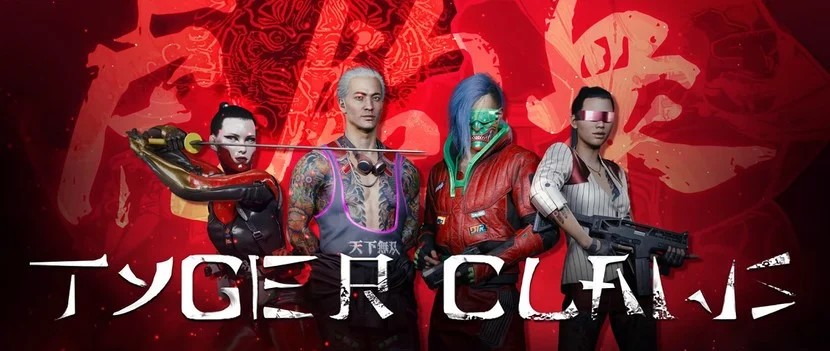

|  | |||||||||
| Anasayfa | Hayvanlar | Kaplan Pençeleri | Valentinolar | Voodoo Oğlanları | Maelstrom | Mox | 6. Cadde | Wraithler | Aldecaldolar |
|
2020'de kurulan 'Kaplan'ın Pençesi' (asıl hali ile Tyger Claws) orijinal Japon Kent toprağı ve etrafındaki yerleşim komünitesini talep eden ufak, defansif bir saldırı çetesiydi. Genel olarak çete siber donanım yerine dövüş sanatlarına, geleneksel Japon silahlarına ve gelişmiş reflekslere güvenmeyi tercih ediyordu. Finansal açıdan Arasaka tarafından desteklendikleri, dedikodular arasındaydı. Dördüncü Kurum Savaşı'ndan sonra Kaplan'ın Pençesi, ismini Kaplan Pençeleri olarak değiştirdi. Amaçları 2045'te Gece Şehri'nin Asyalı komünitesini korumaktı. Çete Eski Japon Kent bölgesini kontrol ediyordu ve yavaş yavaş Watson'a taşınıyordu. Bu süreçte aynı zamanda Arasaka ile bağlarını koparmış ve Japon Kent'i eski ihtişamı için tekrardan inşa etmekte büyük bir rol oynamışlardı. Çete 2077'ye kadar çok az değişti. Sık sık siber donanım kullanımı ve ulaşım amaçlı motorlara sabit kalınması az olan değişimlere örneklerden birkaçıydı. Aynı zamanda ufak ve mütevazi bir başlangıçtan şehirdeki en büyük çetelerden biri olmak için yaptığı yolculuğu tamamladı. Söylentilere göre Tokyo'da bulunan Çelik Ejderler isimli bir çete ile kan davaları vardı. Kaplan Pençeleri, Japon Kent'ten çıkma acımasız ve yerel bir çetedir. 5.500 üye sayısıyla Gece Şehri'nin en büyük çetelerinden biridir. Triadlar ve Yakuza gibi Asya suç örgütlerinin üye alma metotlarını kullanmaktadırlar. Çete ağırlıklı olarak Asyalı üyeler barındırmaktadır ve ana amaçları kendi bölgeleri içerisinde kontrolü sağlayıp ara sıra diğer çetelerin işlerini kendi bünyelerine katmaktır. Kaplan piyadeleri ışıltılı Asya dövmeleri, hızlı sokak motorsikletleri, katanaları ve tantoları ile kolayca tanınırlar. Refleks arttırıcılar, artırılmış siber uzuvlar, acı editörleri ve dövme gibi gözüken ECM sistemleri, çetenin kullandığı siber donanımlara örneklerdir. Yaklaşık 5500 üye ile en kalabalık çetelerden biridir. Arasaka şirketinin üst kademe üyeleri ile yakın bağları bulunmaktadır. Kaplan Pençeleri(Tyger Claws)'nin iş stratejisi yakuza'ya benzer. En alt seviyedeki üye ile ters düşmek, tüm çeteden hızlı ve şiddetli bir tepkiye neden olabilir, ancak istediklerini alırlarsa her şey yoluna girer. Çetenin en üst düzey rütbelileri, ticareti uzun vadede savaşa tercih ediyorlar, ancak çete üyelerinin çoğu şiddete eğilimli sadist kabadayılar. Kaçırma, işkence, cinsel saldırı ve acımasız ya da olağandışı cinayetler, ahlaksızlıklarının sadece birkaç örneğidir. Genç, küstah ya da sarhoş çetenin kendi bölgelerinde statülerini kötüye kullanarak, yabancıları taciz ederek ve kavgaları kışkırtarak çetenin ideolojilerini zayıflatması alışılmadık bir durum değildir. Bu davranış çetenin suç patronları tarafından onursuz kabul edilir, ancak çete üyesinin davranışına aynı şekilde tepki veren bir yabancı nadiren cezasız kalır. Çetenin saflarının dışındaki insanların çoğu, çetenin yüksek rütbeli üyeleriyle bağlantıları olmadığı sürece, çete ile doğrudan yüzleşmekten akıllıca kaçınır.
Japantown, Night City'nin önde gelen gece hayatı bölgesidir ve çete, bunun önemli bir bölümünü kontrol eder. Night City'de diğer çetelerden daha fazla işletmeleri var; barlar,
restoranlar, braindance kulüpleri, genelevler ve kumarhaneler. Bu işletmelerin çoğu yasal işletmeler olarak kayıtlıdır, ancak yasa dışı işlemler ve kara para aklama için cephe
görevi görür.
|